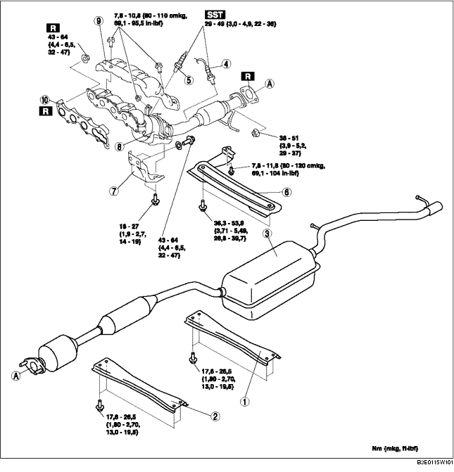

1. Den Stopfen entfernen. (Siehe ABDECKPLATTE AUSBAUEN/EINBAUEN [LF].)
2. Batteriedeckel und Batterieführung entfernen. (Siehe BATTERIE AUSBAUEN/EINBAUEN [LF].)
3. Das Massekabel der Batterie abklemmen.
4. Die untere Abdeckung ausbauen.
5. Gemäß der Reihenfolge in der Tabelle ausbauen.
6. Der Einbau erfolgt in umgekehrter Reihenfolge.

.
|
1
|
Hintere Halterung
|
|
2
|
Vordere Halterung
|
|
3
|
Hauptschalldämpfer
|
|
4
|
Nachgeschaltete beheizte Lambdasonde
(Siehe LAMBDASONDE AUSBAUEN/EINBAUEN [LF].)
|
|
5
|
Vorgeschaltete beheizte Lambdasonde
(Siehe LAMBDASONDE AUSBAUEN/EINBAUEN [LF].)
|
|
6
|
Träger
|
|
7
|
Auspuffkrümmerhalterung
|
|
8
|
WU-TWC
(Siehe Ausbauhinweis für Auspuffkrümmer.)
(Siehe Einbauhinweis für Auspuffkrümmer.)
|
|
9
|
Auspuffkrümmer-Hitzeschild
|
|
10
|
Auslasskrümmerdichtung
|
1. Die untere Stoßdämpferschraube und die Befestigungsschraube des Hinterachsfahrschemels lösen und den Hinterachsfahrschemel um ca. 70 mm {2,8 in} absenken. (Siehe HINTEREN FAHRSCHEMEL AUSBAUEN/EINBAUEN.)
1. Die Vorderräder und Reifen abnehmen.
2. Die Lenkwelle vom Lenkgetriebe und -gestänge lösen. (Siehe LENKGETRIEBE UND -GESTÄNGE AUSBAUEN/EINBAUEN.)
3. Die Gummilagerung des Motorlagers Nr. 1 entfernen. (Siehe MOTOR AUSBAUEN/EINBAUEN [LF].)
4. Die Schrauben am Auspuffkrümmer lösen.
5. Die Befestigungsschrauben des vorderen Stabilisators und des Vorderachs-Fahrschemels herausdrehen. (Siehe VORDERACHS-FAHRSCHEMEL AUSBAUEN/EINBAUEN.)
6. Die Befestigungsschrauben des Vorderachsfahrschemels lösen und den Vorderachsfahrschemel ca. 100 mm {3,94 in} absenken. (Siehe VORDERACHS-FAHRSCHEMEL AUSBAUEN/EINBAUEN.)
7. Das flexible Auspuffrohr mit ein Stützmantel oder Splint, wia abgebildet, stützen.
8. Den Auspuffkrümmer entfernen, diesen dazu an der Unterseite des Fahrzeugs absenken.
1. Die Befestigungsmuttern des Auspuffkrümmers in der abgebildeten Reihenfolge festziehen.